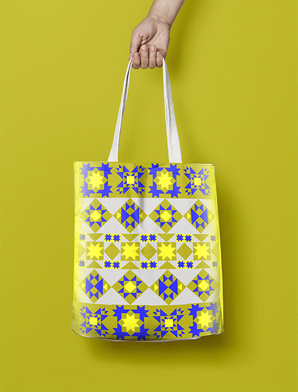
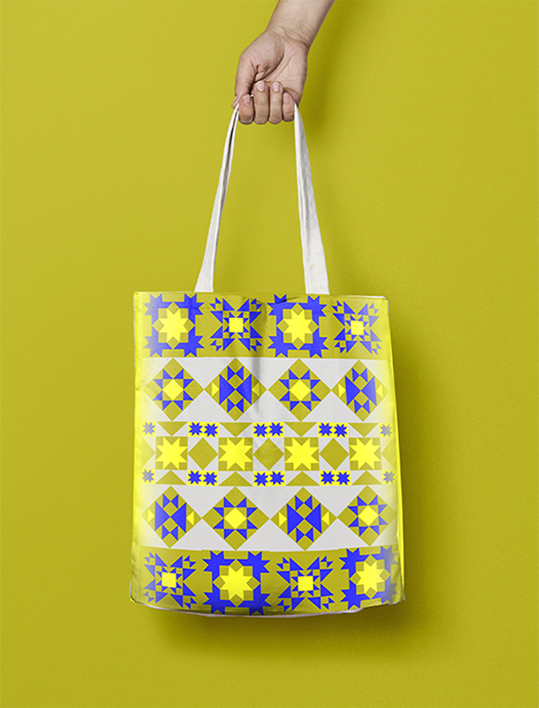

I was inspired by the distinct exterior of the building, especially in contrast to the modern MoMA building right next to it. I incorporated the outline of the building with the first letters of the museum's title.
I wanted to approach folk art from a new perspective, so I chose colors that are both bold and decorative, as well as down-to-earth.


 
